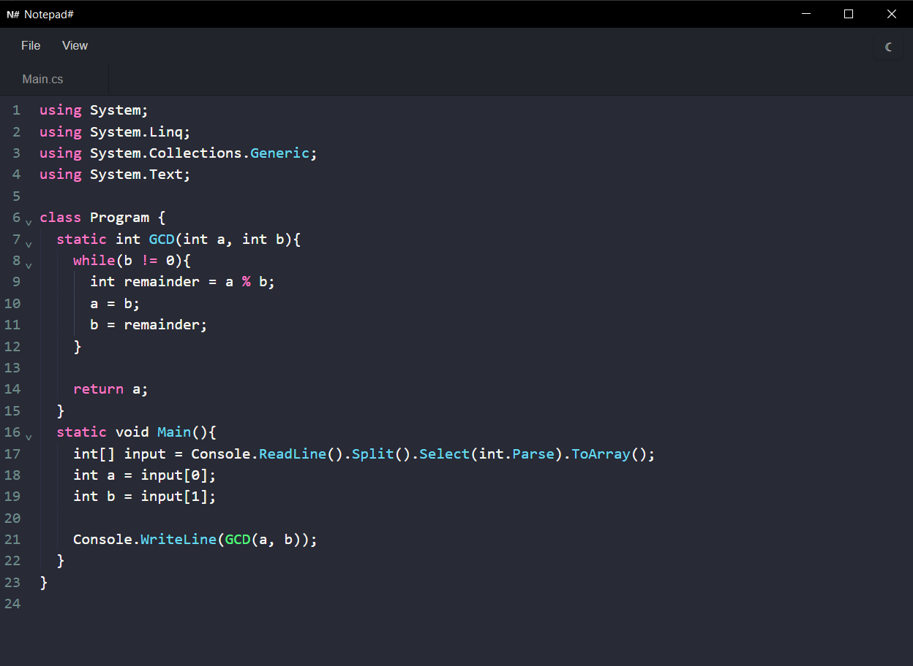

Notepad# Lightweight. Fast. Better.
A lightweight desktop code notepad with syntax highlighting, multi‑tab editing, and a tiny footprint. Better than your standard notepad, without the bloat of a full IDE.
Notepad# starts fast, stays out of your way, and keeps your focus on the code.
Desktop only – downloads are available on PCs and laptops.

Why Notepad#?
Notepad# is a lightweight editor for when you want a simple, fast alternative to standard notepad without waiting for a heavy IDE to boot. Open a file, edit with confidence, and save — all with a clean, distraction-free interface.
- Multi‑tab workflow – keep several files open at once with reorderable tabs, per-tab cursor positions, and modified‑state indicators.
- Syntax highlighting – code highlighting powered by CodeMirror 6 with support for multiple languages, without slowing you down.
- Two curated themes – Dracula (dark) and GitHub Light (light) with a toolbar toggle that switches the entire UI.
- Native file integration – open, save, rename files, and use native file dialogs thanks to Tauri.
- Essential shortcuts – intuitive keyboard commands for all core tasks: save (Ctrl + S), open (Ctrl + O), new tab (Ctrl + N), close tab (Ctrl + W), and more.